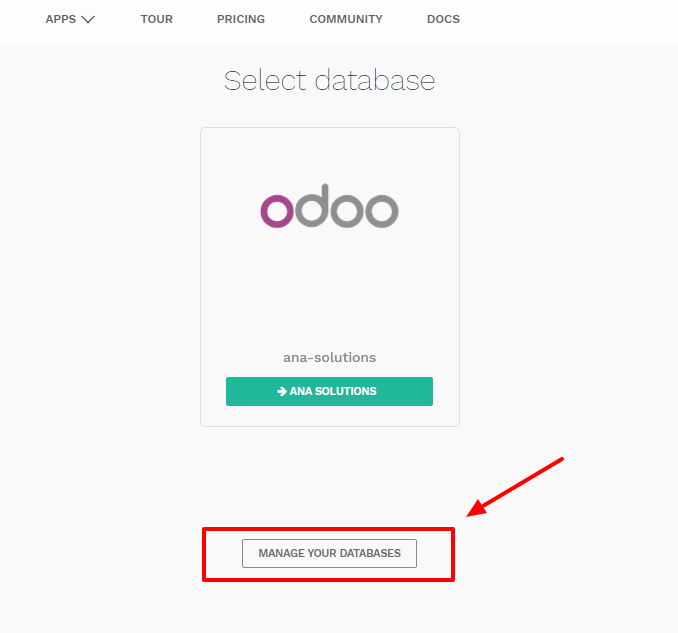
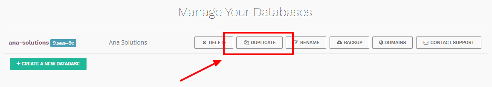
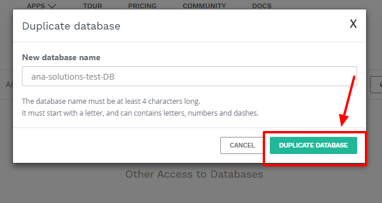
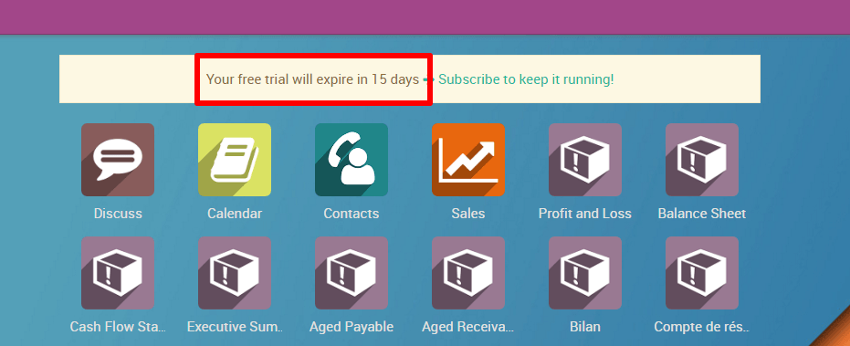
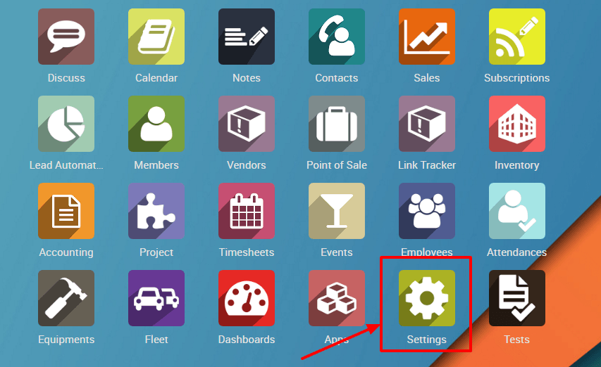
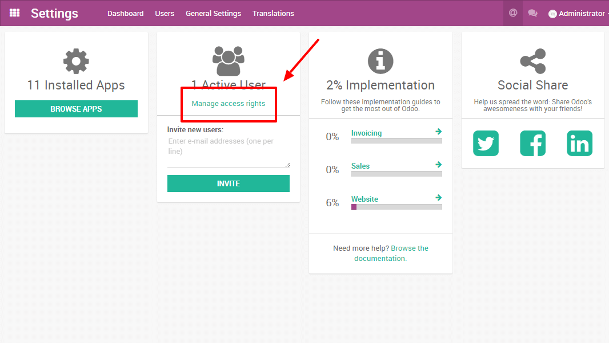
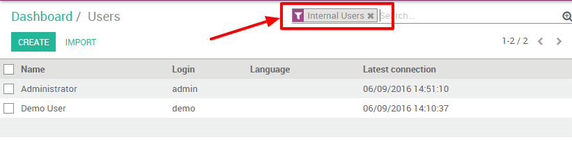
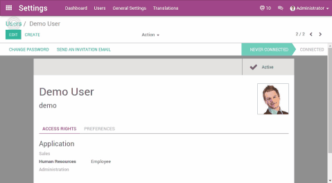
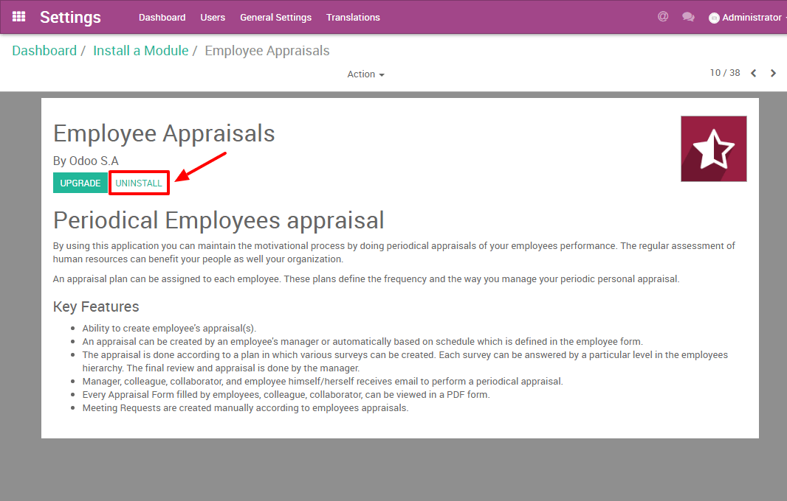
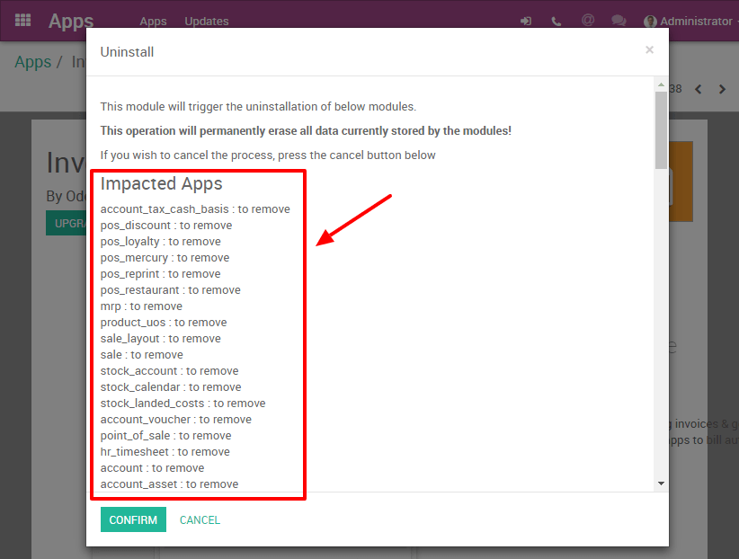

As the administrator of your database, you are responsible for its usage. This includes the Apps you install as well as the number of users currently in use.
Odoo is many things (ERP, CMS, CRM application, e-Commerce backend, etc.) but it is not a smartphone. You should apply caution when adding/removing features (especially Apps) on your database since this may impact your subscription amount significantly (or switch you from a free account to a paying one on our online platform).
This page contains some information as to how you can manage your Odoo instances. The most important section concern the duplication of your database: whenever you wish to install or remove an App, you should always test it first on a duplicate of your production database. That way, if something goes wrong, your day-to-day business is not impacted.
Примечание
If you have questions about the content of this page or if you encounter an issue while carrying out these procedures, please contact us through our support form.
Примечание
Database duplication, renaming, custom DNS, etc. is not available to free customers of our Online platform.
Duplicating a database (online)
Access the database management page (you will have to sign in). Next, make sure you are connected as the administrator of the database you want to duplicate. After that, click on the Manage Your Databases button.
In the line of the database you want to duplicate, you will have a few buttons. To duplicate your database, just click Duplicate. You will have to give a name to your duplicate, then click Duplicate Database.
Опасно
A duplicated database has the same behaviour as a real one:
- Emails are sent
- Payments are processed (in the e-commerce, for example)
- Delivery orders (shipping providers) are sent
- Etc.
It is strongly advised to test behaviour using sample customers/products (with a disposable e-mail address, for example)
After a few seconds, you will be logged in your duplicated database. Notice that the url uses the name you chose for your duplicated database.
Примечание
Duplicate databases expire automatically after 15 days.
Duplicating a database (on-premise)
You can duplicate your database by accessing the database manager on your server (<odoo-server>/web/database/manager). In this page, you can easily duplicate your database (among other things).

When you duplicate a local database, it is strongly advised to change the duplicated database's uuid (Unniversally Unique Identifier), since this uuid is how your database identifies itself with our servers. Having two databases with the same uuid could result in invoicing problems or registration problems down the line.
Примечание
From July 2016 onward, Odoo 9 now automatically change the uuid of a duplicated database; a manual operation is no longer required.
The database uuid is currently accessible from the menu Settings > Technical
> System Parameters, we advise you to use a
uuid generator or to use the unix command
uuidgen to generate a new uuid. You can then simply replace it like any
other record by clicking on it and using the edit button.
Deactivating Users
Примечание
Make sure you have sufficient administrative rights if you want to change the status of any of your users.
In your Odoo instance, click on Settings. You will have a section showing you the active users on your database. Click on Manage access rights.
|  |  |
You'll then see the list of your users.
Примечание
The pre-selected filter Internal Users shows your paying users (different from the Portal Users which are free). If you remove this filter, you'll get all your users (the ones you pay for and the portal ones)
In your list of users, click on the user you want to deactivate. As soon as you are on the userform, go with your mouse cursor on the status Active (top right). Click on Active and you will notice that the status will change to Inactive immediately.
The user is now deactivated.
Опасно
Never deactivate the main user (admin)
Uninstalling Apps
Предупреждение
Make sure you first test what you are about to do on a duplicate of your database before making any changes (especially installing/uninstalling apps).
In your Odoo instance click on Settings; in this app, you will be able to see how many applications you have installed. Click on Browse Apps to access the list of your installed applications.
 |
In your applications' dashboard, you will see all the icons of your applications. Click on the application you want to uninstall. Then, on the form of the application, click on Uninstall.
Опасно
Some applications have dependencies, like Invoicing, eCommerce, etc. Therefore, the system will give you a warning message to advise you of what is about to be removed. If you uninstall your application, all its dependencies will be uninstalled as well (and the data in them will permanently disappear). If you are sure you still want to uninstall it, then click Confirm.
Last, after having checked the warning message (if any), click Confirm.
You have finished uninstalling your application.
Good to know
- Uninstalling apps, managing users, etc. is up to you: no one else can know if your business flow is broken better than you. If we were to uninstall applications for you, we would never be able to tell if relevant data had been removed or if one of your business flow was broken because we do not know how you work and therefore cannot validate these kinds of operations.
- Odoo Apps have dependencies: this means that you may need to install modules that you do not actively use to access some features of Odoo you might need. For example, the Website Builder app is needed to be able to show your customer their Quotes in a web page. Even though you might not need or use the Website itself, it is needed for the Online Quotes feature to work properly.
- Always test app installation/removal on a duplicate (or on a free trial database): that way you can know what other apps may be required, etc. This will avoid surprises when uninstalling or when receiving your invoices.